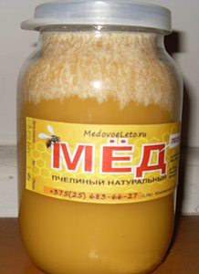

Покупці меду незрідка дивуються з деяких метаморфоз, які відбуваються з медом після його кристалізації.
Одна з таких метаморфоз виявляється в тому, що на внутрішніх стінках банки з медом інколи утворюється білий
наліт, злегка схожий на іній. «Це що цукор?» - з обуренням запитують цінителі натурального продукту? У цій
статті ми спробуємо розібратися що ж це за білий наліт такий і чому-таки мед біліє.Почну з того, як я
зазвичай відкачую і фасую мед. Вибрані на відкачування рамки, запечатані на дві третини і більш, розкриваю
звичайним пасічним ножем, відокремлюючи забрус (воскову печатку). Річ у тому, що вічка сотів в рамках
розташовані небагато під кутом і дивляться ледве вгору, тому роздруковані рамки ставлю в медогонку сотами в
напрямі зворотному їх подальшому напряму обертання. Так мед легше покидає соти.Медогонка у мене звичайна 4-х
рамкова з ручним приводом. У міру відкачування меду, його рівень в медогонці неухильно піднімається і настає
момент, коли нижні кінці рамок починають чіпляти за мед. Відкачування припиняється, піднімаю медогонку вище
за рівень ємкості, куди зливатиметься мед. Для цих цілей я використовую емальовані металеві бачки різного
об'єму з кришками.Витікаючи з медогонки, мед проходить подвійну фільтрацію через дводонне металеве сито з
великими і дрібнішими вічками. Подальше очищення меду від дрібних смітинок відбувається шляхом відстоювання
його протягом декількох днів в емальованих баках. При цьому важкі частки осідають на дно, а дрібні спливають
на поверхню. Після закінчення відстоювання, знімаю верхній шар разом смітинками, а останній вміст енергійно
перемішую великою дерев'яною ложкою, не стосуючись дна. Вгорі збирається рідша і легша фракція меду, нижче
– густа і важка. Отже перед фасовкою слід перемішати мед, щоб його структура була рівномірною. Далі розливаю
продукт тією ж дерев'яною ложкою по банках. Використовую стандартні скляні банки 0, 5 і 1л. У пластик не ллю
принципово, оскільки це не екологічно і мед втрачає у пластиковій тарі частина своїх властивостей.
Таким чином, виходить, що в основному я фасую мед в рідкому вигляді, а процес його подальшої кристалізації
відбувається безпосередньо в скляних банках. Відбувається це протягом місяця, а інколи і раніше. Травневий
мед, наприклад, кристалізується швидше. І ось тут-то на внутрішніх стінках банок з медом і проступає той самий
білий наліт. Тоді як в банках з медом, розфасованим у вже кристалізованому або, як говорять бджолярі, у
вигляді, що «сів», такого нальоту не спостерігається. За роз'ясненнями я звернувся до дослідного дідуся-бджоляру
з сусіднього села. Виявилось, що на стінках кристалізується натуральна глюкоза, яка входить до складу меду.
Вона ж скупчується на поверхні меду при його відстоюванні в баках.Поява кристалів глюкози на поверхні меду
по-іншому називають ще «цвітінням» або «зацвітанням» меду. Такі квіти частенько різноманітні за формою і чимось
нагадують малюнки на вікні в морозний ранок. Виявляється, що цвітіння меду відбувається в тому випадку, якщо він
містить мало вологи, що говорить про високу якість меду, на поверхні якого кристалізується глюкоза. Не следует путать
цветение мёда с белой пенкой, которая может образоваться на его поверхности в результате брожения из-за избыточного
содержания влаги. «Вся проблема в том, что люди думают, что это сахар. Поэтому я жду когда мёд сядет, а потом
перемешиваю его и раскладываю по банкам, так нет никакого белого налёта», - подытожил пчеловод.
Я ж по-старому розливаю мед доки він рідкий, так що якщо вас, дорогі покупці, бентежить блідий мед, знайте, що це
звичайна глюкоза, його натуральна складова. Доброго вам всім здоров'я, спасибі за увагу і розуміння.